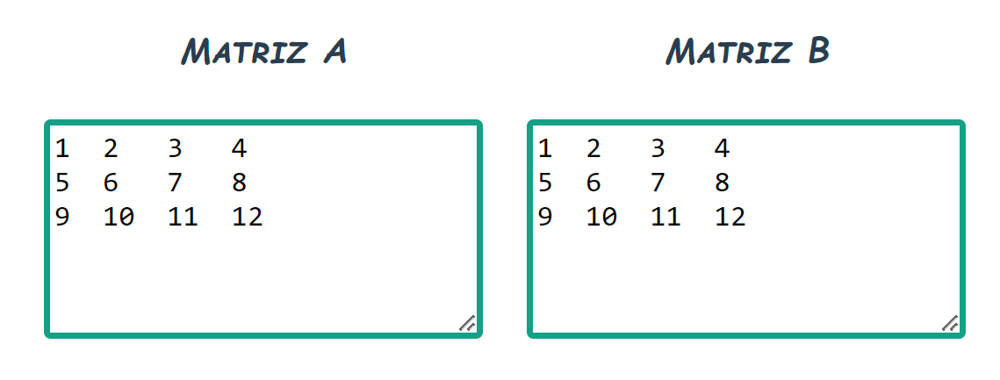
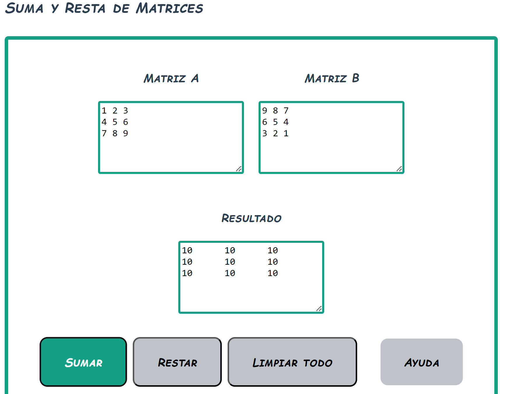
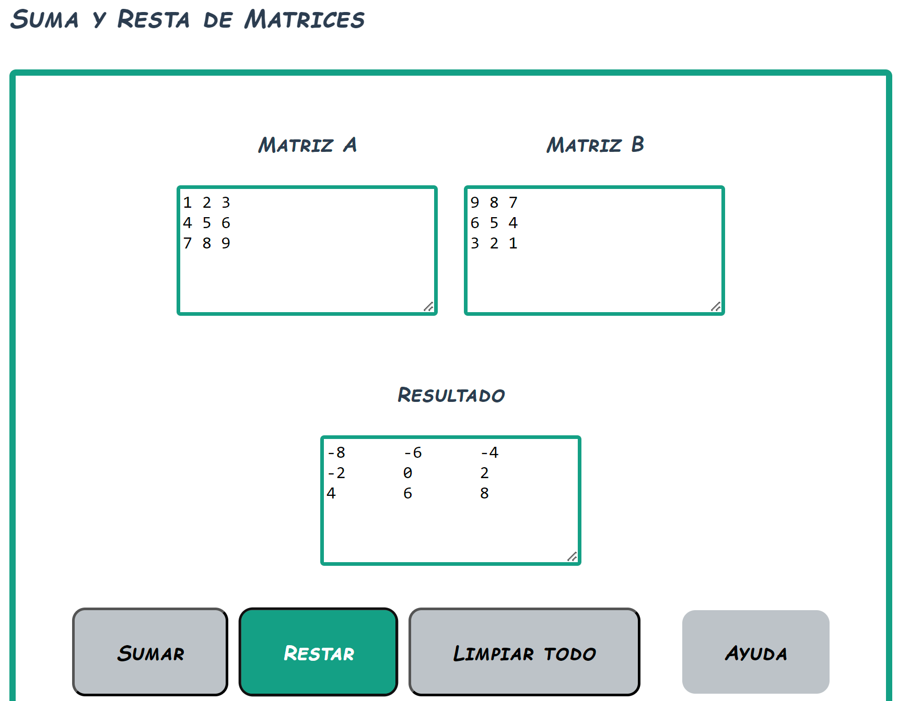

Sección

Paso 5
Texto descriptivo del paso 5...

Paso 6
Texto descriptivo del paso 6...

Paso 7
Texto descriptivo del paso 7...

Paso 8
Texto descriptivo del paso 8...
Esta es la vista general de la interfaz de usuario.
La vista general posee algunas secciones y botones que se describen en este manual.
Estos son los botones para acceder a las secciones de la calculadora.
Estos son: Suma y resta, multiplicación, traspuesta, ecuaciones y el botón para ver este manual. Seleccione el botón de la sección que desea utilizar.
Las áreas de texto de cada sección permiten la entrada de los valores a calcular.
Al final de cada sección se muestran los botones de acción.
Para este ejemplo se muestran los 4 botones de la sección de suma y resta.
Cada botón de acción será explicado en su respectiva sección.
Las áreas de texto son los espacios designados para escribir los valores de las matrices elemento por elemento, como el siguiente ejemplo:
Escriba el primer elemento de la fila 1, dé un espacio y escriba el segundo elemento. Continúe con los elementos de la fila 1. Para escribir la fila siguiente, dé un salto de línea con la tecla enter y siga escribiendo los elementos de la fila siguiente. Repita este proceso hasta finalizar las filas de cada matriz.
En la sección de suma y resta tiene 2 botones de operación. Sumar y restar. Seleccione el botón de la operación que realizará en esta sección.
El botón "Limpiar todo" servirá para limpiar todos los campos de texto y poder hacer operaciones nuevamente.
El botón de ayuda mostrará en una ventana emergente la ayuda referente a la suma y resta de matrices.
Operación suma
Al dar clic en el botón de suma luego de insertar las matrices, se mostrará el resultado en el campo de resultado.
Operación resta
Al dar clic en el botón de resta luego de insertar las matrices, se mostrará el resultado en el campo de resultado.
Texto descriptivo del paso 5...
Texto descriptivo del paso 6...
Texto descriptivo del paso 7...
Texto descriptivo del paso 8...